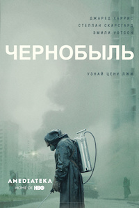
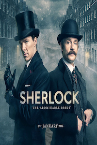
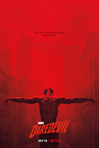
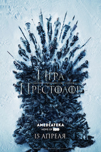
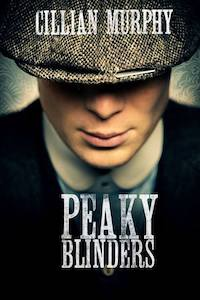

Чернобыль
2019
26 апреля 1988 года химик Валерий Легасов, надёжно спрятав шесть аудиокассет со своими воспоминаниями, вешается у себя в квартире.
Список актёров:
Джаред Харрис,
Стеллан Скарсгард, Эмили Уотсон, Джесси Бакли, Адам Нагаитис, Пол Риттер, Роберт Эммс, Сэм Тротон, Карл Дейвис,
Майкл Соча и др.

Шерлок
2010-2017
Лондон, 2010 год. Происходят необъяснимые убийства. Скотланд-Ярд без понятия, за что хвататься.
Существует лишь один человек, который в силах разрешить проблемы и найти ответы на сложные вопросы.
Список актёров:
Бенедикт Камбербэтч, Мартин Фриман, Уна Стаббс, Руперт Грейвз, Луиза Брили, Марк Гэтисс,
Эндрю Скотт, Аманда Аббингтон и др.

Сорвиголова
2015-2018
В результате несчастного случая юный Мэтт Мердок теряет зрение, но зато все остальные его чувства усиливаются в десятки раз.
Повзрослев, Мердок понимает, что хочет посвятить свою жизнь защите людей и борьбе с преступностью.
Днем он — успешный адвокат, а ночью — мститель в маске по прозвищу Сорвиголова.
Список актёров:
Чарли Кокс, Дебора Энн Уолл, Элден Хенсон, Винсент Д’Онофрио, Джон Бернтал, Элоди Юнг, Розарио Доусон, Вонди Куртис-Холл,
Айелет Зурер и др.

Игра престолов
2010-2019
Семь Королевств борются за Железный трон. Самый масштабный и обсуждаемый сериал 2010-х годов
Список актёров:
Питер Динклэйдж,
Лина Хиди, Эмилия Кларк, Кит Харингтон, Софи Тёрнер, Мэйси Уильямс,
Николай Костер-Вальдау, Иэн Глен, Алфи Аллен и др.

Острые козырьки
2013
Криминальная сага в стиле ретро о банде и ее лютом боссе. Так популярна, что повысила продажи головных уборов
Список актёров:
Киллиан Мёрфи,
Пол Андерсон, Хелен Маккрори, Софи Рандл, Нед Деннехи, Финн Коул, Йен Пек, Гарри Киртон, Джо Коул и др.